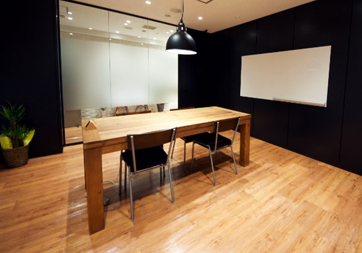
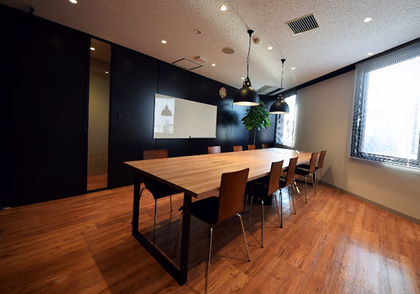
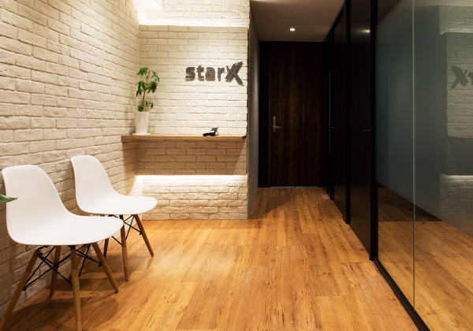

RECRUIT
CULTURE スタークスのカルチャー
WELFARE社内制度・福利厚生
-
- チームMVPプレゼン
- 毎月最終営業日に、各チームが今月どんな課題に取組んだか全社員の前でプレゼンを行います。結果だけでなく、課題解決プロセスを評価します。MVPに選ばれたチームには、トロフィーと社長との豪華ランチ権が贈られます。
-
- 半期表彰
- 半期に1度の社員総会にて表彰を行います。MVP、新人賞など半期の業績に対する表彰、また業績以外の貢献や課題解決のプロセスを評価されます。表彰者にはトロフィーと金一封が贈られます。
-
- 役員塾
- 社長と、役員による月に1度の勉強会です。課題図書に対し、感想のアウトプットを行い理解を深めたり、専門知識をつけるためのワークを行います。
-
- 自己投資補助（スキルアップ手当）
- ビジネススクールや資格取得など、スキルアップや、自己成長のために投資する際に補助を利用できます。
-
- タスクフォース制度
- オフィス移転、採用広報、福利厚生、社内制度作りなど、プロジェクトごとに専用チームを作ります。通常の業務以外に様々なプロジェクトに携わる事ができます。
-
- スポーツジム利用ディスカウント
- 日頃の健康づくりのために、全国の提携スポーツクラブが社員割引価格で利用できます。
-
- 雑誌新聞定期購読
- 業界紙、ビジネス書、日経新聞など定期購読紙が読み放題です。
-
- 社内図書貸出
- 社長、役員オススメの良書を社内の書庫で貸し出しています。何度も読みたくなる選りすぐりの書庫です。
-
- シエスタ制度
- 生産性を高めるため、仮眠をとることができる制度です。
-
- PC選択制度(エンジニア限定)
- 生産性向上のため、WindowsとMacで使いたいPCを入社時に選択できます。
-
- 出産祝い金
- 自身の出産時・奥様の出産時に、お祝い金が支給される制度です。
-
- インフルエンザ予防接種
- 会社負担で、全員予防接種を受けることができます。
-
- 懇親会補助制度
- 社内のコミュニケーション活性化のため、懇親会費の補助ができます。チームをまたいで飲み会を行った場合、1人3000円が月に1度まで支給されます。
-
- アニバーサリー休暇制度
- 年に1度、誕生日や結婚記念日など、好きな日を記念日として、お休みすることができます。
-
- 毎年5日間の特別休暇
- 入社3年以上の社員に限り、毎年5日間、特別休暇を取れる制度です。

社内風景
- 
- 
- 
pagetop